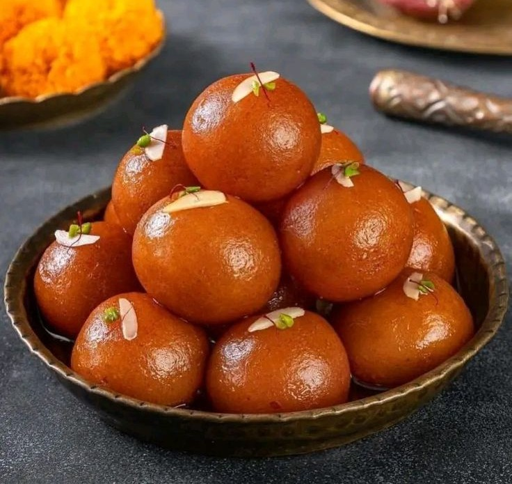

🍮 Gulab Jamun

Description:
Gulab Jamun is a popular Indian dessert made with milk solids, deep-fried
into soft golden balls, and soaked in fragrant sugar syrup. It's a festive
favorite and melts in the mouth!
Prep Time:
⏱️ 1 hour
Ingredients:
- 1 cup milk powder
- 1/4 cup all-purpose flour (maida)
- 2 tbsp ghee
- 1/4 cup warm milk (for kneading)
- 1/4 tsp baking soda
- Oil or ghee for deep frying
- 1 cup sugar
- 1 cup water
- 2-3 cardamom pods
- Rose water or saffron strands (optional)
Instructions:
- Mix milk powder, flour, baking soda, and ghee in a bowl.
- Add warm milk gradually and knead into a soft, smooth dough. Let it rest for 10 minutes.
- Make small, crack-free balls from the dough.
- Heat oil on low flame and fry the balls until golden brown.
- In a pan, boil sugar, water, and cardamom to make syrup. Optionally add rose water or saffron.
- Soak the fried balls in warm syrup for at least 30–60 minutes before serving.